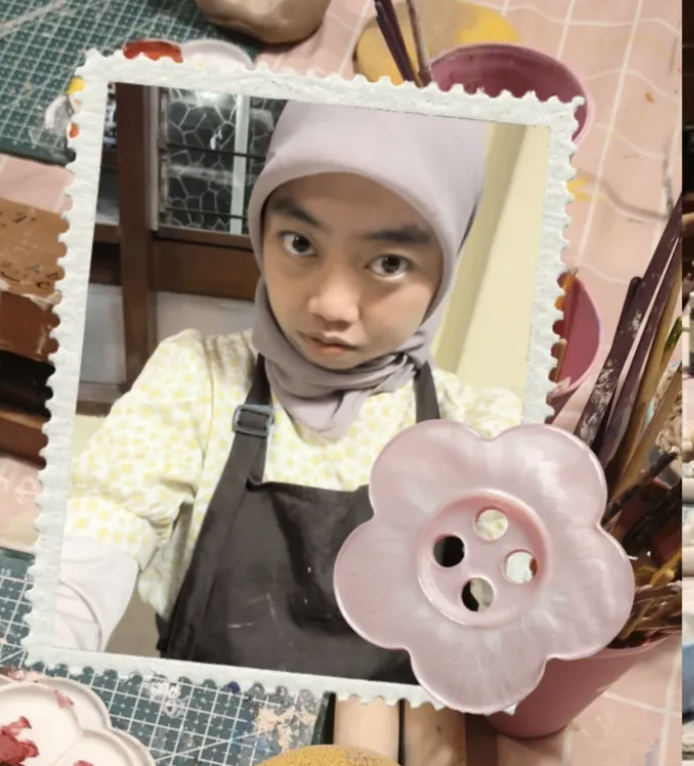

Jinji Journey
Channel YouTube aku! Aku jinji, pecinta traveling dan menjelajah 𐙚˙✧˖°📷 ༘ ⋆｡ ˚ yang senang berbagi tentang perjalanan aku, disini
Play, create, repeat
Ruang kecil untuk menyimpan video, audio, dan ide digital yang membuat proses berkarya terasa lebih hidup.

Channel YouTube aku! Aku jinji, pecinta traveling dan menjelajah 𐙚˙✧˖°📷 ༘ ⋆｡ ˚ yang senang berbagi tentang perjalanan aku, disini
Di waktu lain aku belajar mencari tambahan uang melalui affiliate TikTok dan berjualan di Shopee.